fastjson响应乱码
一、HttpMessageConverters
Spring MVC uses the
HttpMessageConverterinterface to convert HTTP requests and responses. Sensible defaults are included out of the box. For example, objects can be automatically converted to JSON (by using the Jackson library) or XML (by using the Jackson XML extension, if available, or by using JAXB if the Jackson XML extension is not available). By default, strings are encoded inUTF-8.
翻译：
Spring MVC使用HttpMessageConverter接口转换HTTP请求和响应。开箱即用中包含明智的默认设置。例如，可以将对象自动转换为JSON（通过使用Jackson库）或XML（通过使用Jackson XML扩展（如果可用）或通过使用JAXB（如果Jackson XML扩展不可用））。默认情况下，字符串以“ UTF-8”编码。
二、 使用fastjson转换JSON
出于种种理由，我们可能会放弃零配置的Jackson而使用fastjson，具体步骤如下：
1. 修改pom文件
1 | ... |
2. 添加 FastJsonHttpMessageConverter
1 |
|
我们新建一个pojo类和controller类来测试程序
1 |
|
1 |
|
启动，浏览器访问，发现返回结果出现中文乱码
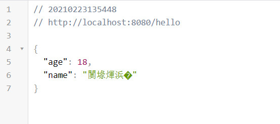
3. 乱码的俩种解决方法
搜寻网上，发现有俩种方法，尝试一下，确实行的通
第一种：添加配置 spring.http.encoding.force-response=true
在application.yml 或 application.properties文件添加上面的配置
新版本以上配置已经显示过时，请使用 server.servlet.encoding.force-response=true 代替
第二种：修改 FastJsonHttpMessageConverter 配置
1 |
|
新版本 MediaType.APPLICATION_JSON_UTF8 已过时，请使用 MediaType.APPLICATION_JSON 替代
在 MediaType.APPLICATION_JSON_UTF8 的源码注释上，可以看到过时的原因
1 | /** |
4. 为什么这俩种方法可以解决乱码
打开浏览器的调试窗口，分别查看 乱码情况，第一种情况，第二章情况的返回头信息
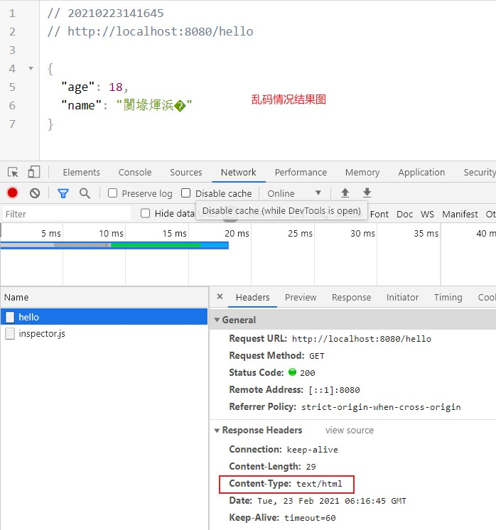
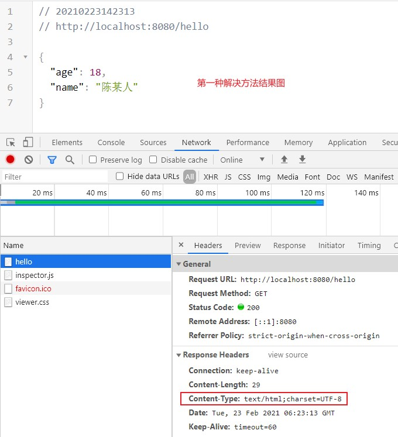
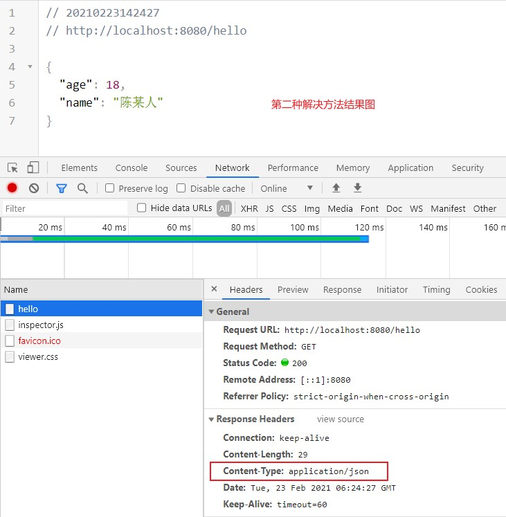
可见第一种解决方法是在乱码的情况下添加了 charset=UTF-8 但其响应内容类型是text/html，不符合我们的愿意（我们想返回的是JSON类型），所以第一种解决方法实际上是错误的
5. 为什么jackson不会乱码
通过上面的内容我们猜测Jackson不会乱码是因为设置了响应类型是application/json，而fastjson因为响应类型是text/html导致乱码，通过查看源码来验证
- HttpMessageConvertersAutoConfiguration 自动配置类中，导入了 JacksonHttpMessageConvertersConfiguration
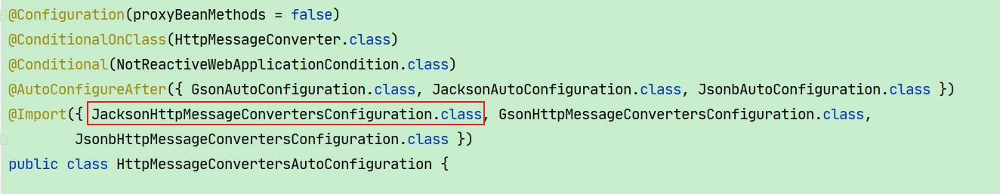
- JacksonHttpMessageConvertersConfiguration 配置了类型为MappingJackson2HttpMessageConverter 的Bean，这是 Jackson 提供的实现了HttpMessageConverter接口的类
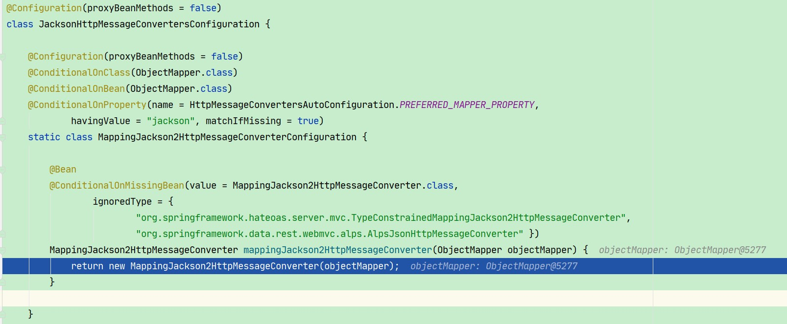
- 继续点击查看其构造方法，可以看到传入了 MediaType.APPLICATION_JSON
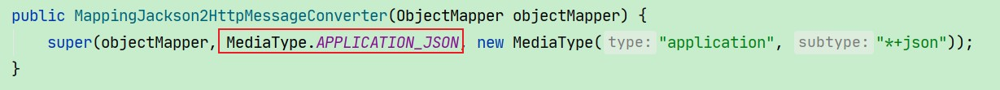
- 查看 FastJsonHttpMessageConverter 的无参构造方法，可以看到传入的是 MediaType.ALL（*/*类型）
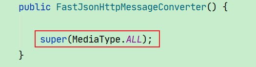
为什么 */* 类型最后返回的却是text/html类型呢？
- Debug 发现在调用 HttpMessageConverter 的 write 方法之前会调用 AbstractMessageConverterMethodProcessor 的 writeWithMessageConverters 方法
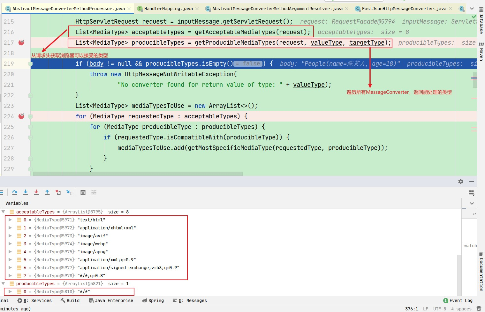
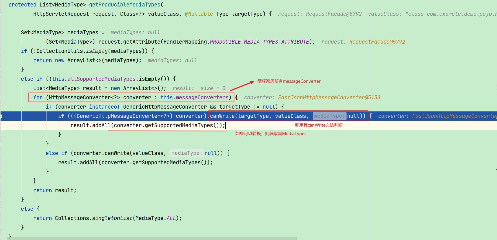
- 继续跟踪canWrite( ) 方法
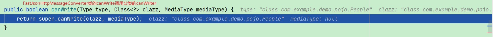
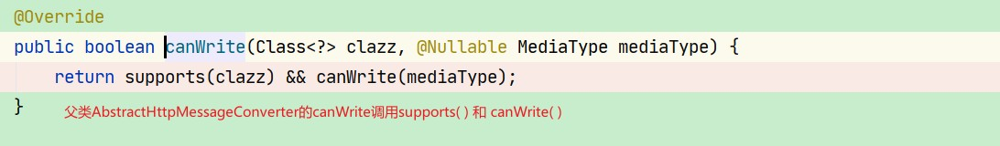
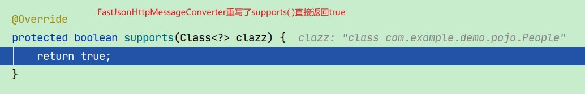
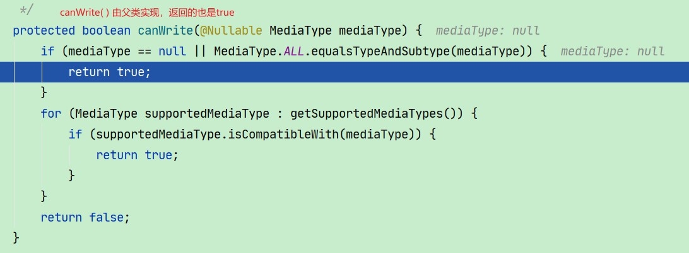
至此 */* 类型的 FastJsonHttpMessageConverter 支持本次转化，且返回了 */* 类型
如果为 FastJsonHttpMessageConverter 添加只支持 MediaType.APPLICATION_JSON， 则返回的是 application/json 类型
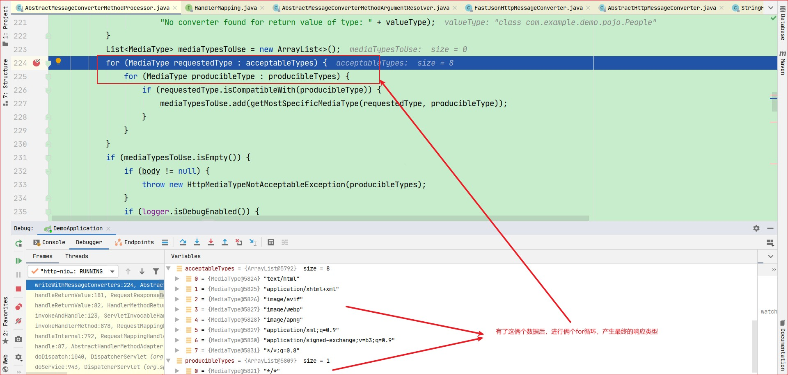
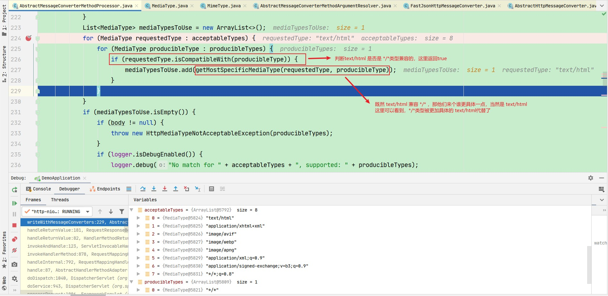
接下的代码，还会对所有支持的类型进行一个排序，text/html排在第一位，所以就选择以此类型作为响应类型